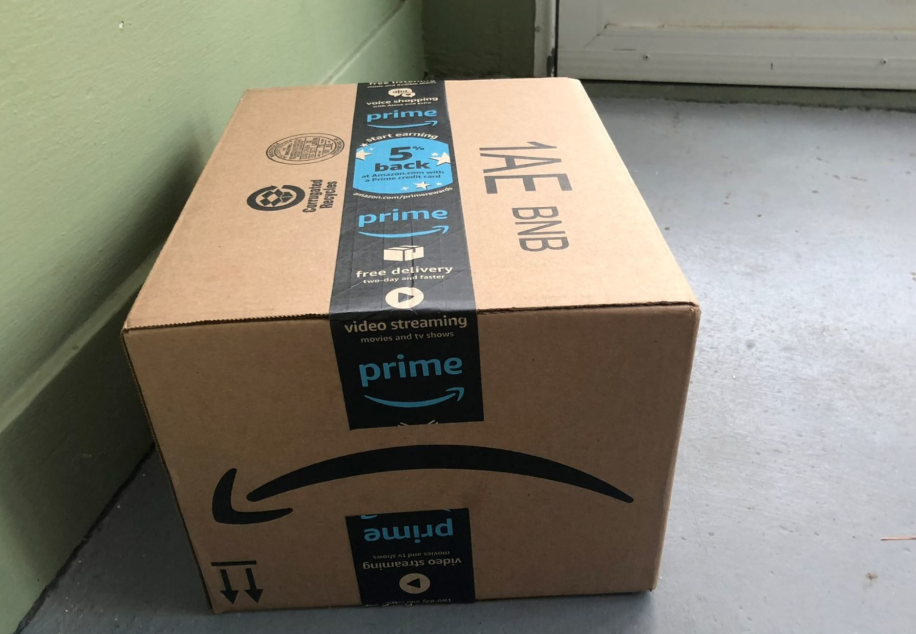
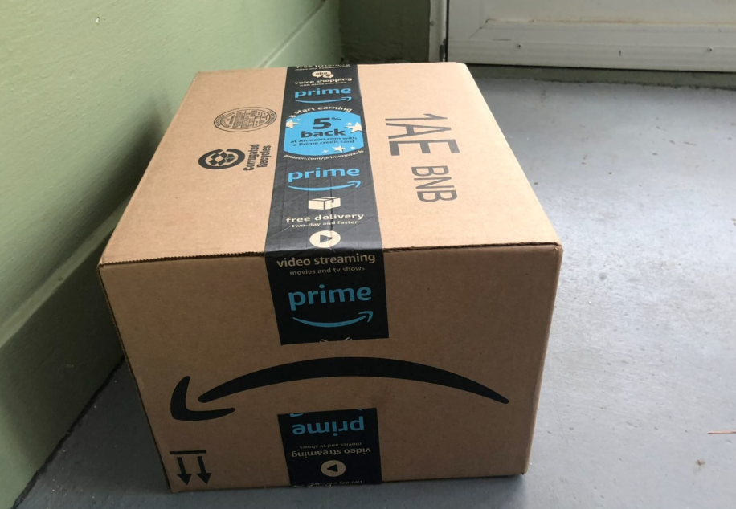
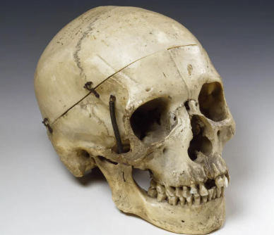

January 21, 2025
My 24 year old niece told me about Attack on Titan. I can't get enough. Just bought the first 12 books from Amazon. Maybe good literature isn't dead... ?
"If music be the food of love, play on"
Location: Tuscaloosa, AL
If it's not written before 1680, it's bad. #ClassicalLiterature Do not give me book recommendations I will not read them. Professional biker.
January 21, 2025
My 24 year old niece told me about Attack on Titan. I can't get enough. Just bought the first 12 books from Amazon. Maybe good literature isn't dead... ?
January 17, 2025
As I've gotten older over the years I've realized that Hamlet, my favorite work, is a methaphor for modern life.
December 31, 2024
I thought the general representation of Shakespeare was accurute, but I felt as if the actors accents were too contemporary to be true to the soul of Shakespeare's works. #MuchAdoAboutNothing